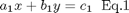
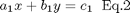
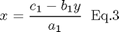
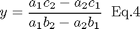
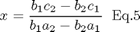

Résoudre algébriquement deux équations
Contents
Méthode avec un crayon
Résoudre un système de 2 équations et deux inconnus. La nomenclature utilisée est celle de l'annexe C/4 de Meriam.


Isoler x de l'équation 1 :

Remplacer x dans l'équation 2 et isoler y :

Utiliser ce résultat dans l'équation 3 pour obtenir x :

Fonction solve de Matlab
Matlab permet de résoudre automatiquement ce système d'équation en utilisant la fonction solve. Les arguments de la fonction sont les équations ainsi que les variables à isoler.
Les arguments de solve sont des données caractères.
clear all; close all; clc; Eq1 = 'a1*x + b1*y = c1'; Eq2 = 'a2*x + b2*y = c2'; S=solve(Eq1, Eq2, 'x', 'y'); x = S.x y = S.y % S est une structure de données ayant deux champs % x et y contenant les deux résultats.
x = (b2*c1-c2*b1)/(-a2*b1+a1*b2) y = -(a2*c1-a1*c2)/(-a2*b1+a1*b2)
Exemple d'utilisation de solve
Les solutions des équations suivantes sont x = 3.4 et y = 1.8
Eq1 = '2*x -y = 5'; Eq2 = 'x +2*y = 7'; S=solve(Eq1, Eq2, 'x', 'y'); x = S.x y = S.y
x = 17/5 y = 9/5
Matlab fournit la réponse sous la forme d'objets symboliques. Pour les utiliser dans une expression numérique Matlab, il faut convertir chaque réponse à l'aide de l'instruction eval.
x_symbolique = x x_numerique = eval(x)
x_symbolique =
17/5
x_numerique =
3.4
Noter la différence de l'affichage des deux types de données :
- 17/5 est complètement à gauche,
- 3.4 est décalé vers la droite.
y_symbolique = y y_numerique = eval(y)
y_symbolique =
9/5
y_numerique =
1.8
R1 = y_symbolique + 1/7 % exemple de calcul
R2 = y_numerique + 1/7
R1 =
68/35
R2 =
1.9429
Exemple d'application en statique

Pour calculer les composantes obliques de F, il faut établir les vecteurs unitaires de a, b et F, déterminer les trois vecteurs, poser et résoudre deux équations portant sur la somme des composantes.
Voir le problème 2/17 de Meriam.
Coquille Maple
Matlab contient une coquille Maple permettant de résoudre des équations et de calculer des intégrales et des différentielles. Cette étude est effectuée principalement dans les cours de mathématiques de S2.
Exemple :
diff('sin(x)') % la différentielle du sinus int('2*x^2')% intégrale de 2x²
ans = cos(x) ans = 2/3*x^3
Voilà pour l'essentiel !